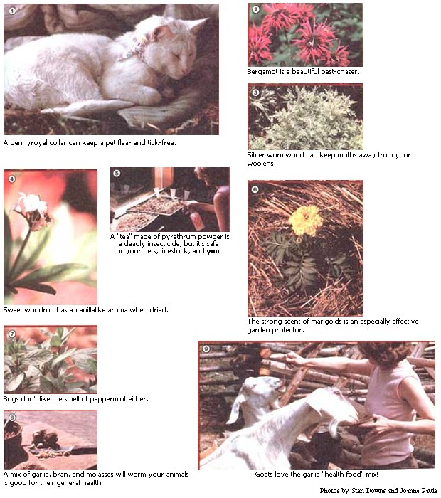

Few experiences are more frustrating, more irritating, or more just plain maddening than dealing with creeping, crawling, or flying pests ... no matter if they're in your carefully planted garden, in your abode, on your pets or livestock, or on you.
And the situation can get even worse when you start looking for a way to solve your bug problems. Here, for instance, is a sample of the kind of "reassurance" you can find on a typical pesticide can, box, or bottle label: CAUTION! HARMFUL TO HUMANS, PETS, AND LIVESTOCK. DO NOT INHALE OR LET PRODUCT COME IN CONTACT WITH SKIN. DO NOT USE VEGETABLES TREATED WITH THIS PRODUCT FOR ONE WEEK AFTER APPLICATION . . . etc., etc., etc.
Fortunately, there is a way to have healthy crops and critters without handling poisons . . . and that's to grow your own safe insecticides! Over the ages many pungent herbs have served man as natural pest repellents. Such homegrown protective agents were used effectively long before the present chemical craze, and they still work.
IN THE GARDEN:
PYRETHRUM
One of the better-known organic pesticides is pyrethrum ( Chrysanthemum cinerariaefolium or Chrysanthemum coccineum ). Do plan on growing your supply rather than buying any, though . . . some commercial products labeled "pyrethrum dust" are simply a pyrethrum powder base that's laced with those toxic, residual poisons characteristic of today's overkill pest control philosophy.
The pyrethrum plants, also known as "painted daisies" or "painted ladies", provide pest-repellent action when grown either throughout your garden or as border plants.
On the other hand, if you want to treat a localized infested area, you can pick, dry, and crush the flowers' petals to make your own safe pyrethrum dust. Or, as an alternative, make a strong "tea" of the powder and spray it directly on the insects. Remember: Pyrethrum is not residual. . . but it is toxic to soft-bodied insects (aphids, etc.), and to some coldblooded vertebrates, on contact. The dust is nontoxic to you, your livestock, or your pets, however ... and can even be used as a safe flea powder.
GARLIC
Widely known for its aroma, garlic will turn away more than a few garden invaders. When interplanted throughout your plot, berry patch, or orchard, this ancient herb will scare off Japanese beetles, aphids, and other annoying insects. (If you fear that such widespread planting will produce too much garlic for one homestead, bear this in mind: As always, there's nothing like homegrown ... and the aromatic plant has innumerable applications for year-round culinary and medicinal use. For example, it can rebuff such beasties as mosquitoes, ticks, and intestinal worms. What's more, livestock fed with garlic have been shown to be disease resistant, relatively worm-free and - in general - healthier than most nongarlic-fed animals.)
To make a great bug-chasing spray for plants, just blend crushed garlic with water (experiment with different concentrations till you find the strength that works for you), let it soak, and spray the strained liquid on the gnawing invaders that play havoc with your garden. (For an extra strong spray, add some cayenne to the basic mixture.)
FEVERFEW
Feverfew ( Chrysanthemum parthenium or Pyrethrum parthenium ) - a relative of pyrethrum that was used in the old days to help reduce fever - is also a mild insect repellent. Though the daisylike flowers are beautiful, their bitter aroma repels pests from nearby vegetables. (That's how most pesticide plants work: When intermingled with edibles, they emit a disagreeable odor which deceives insects into thinking that nothing yummy is growing in the area.)
MARIGOLDS, ETC.
Mexican marigolds ( Tagetes minuta ) and pot marigolds ( Calendula officinalis ) are especially effective garden protectors (be sure, however, not to grow the "new, improved" no-scent varieties). Scatter the flowering plants through your Brassicas (cabbage, cauliflower, broccoli, brussels sprouts) for bugless crops that are also free of nasty nematodes. (Start the marigolds indoors early so that they'll be ready to bloom and protect even your very first seedlings.)
The list of beneficial garden herbs goes on and on: Nasturtiums scare off bean beetles and aphids ... horseradish will guard your potato patch . . . sage, catnip, thyme, and rosemary deter the cabbage moth (as does mint, which is generally helpful to cabbage) ... chives ward off aphids ... and chamomile tea protects new seedlings from "damping off". Bergamot, lavender, and lemon balm can also be used to provide general repellent action throughout the garden.
FOR HOME AND HOMEBODIES:
PENNYROYAL
If you and your animals are plagued by summertime bouts with mosquitoes, ticks, and fleas, by all means grow lots of pennyroyal ( Mentha pulegium ) . It has an intense minty scent that the bloodthirsty pests detest. Furthermore, pennyroyal can be multiplied easily by separating and planting its rooted runners once the "parents" are established.
I make cloth flea collars for our pets by sewing a tube of fabric that will be long enough to tie around the animal's neck. To do this, I fold a three-inch-wide strip of material in half lengthwise, stitch the edges, turn the resulting tube inside out, and stuff it full of either dried or fresh pennyroyal before securing it around my pet's neck. For personal use, simply take a handful of the fresh leaves and rub them on your face, arms, and other exposed areas.
TANSY
Tansy ( Tanacetum vulgare ) can, if planted by your doorstep, discourage ants from entering your home. Likewise, a bunch of the herb (or of sweet woodruff: Asperula odorata ) hung in your dwelling or barn will keep flies away.
For summer storage of woolens, grow lavender, sweet woodruff, southernwood, or wormwood ... and spread the dried leaves throughout the boxes of clothing. (Sweet woodruff has a lovely vanillalike fragrance when dried . . . a scent that you'll savor, but the moths won't.)
LOVELY LONGEVITY
One of the fringe benefits of growing your own pesticides is economy ... because many such herbs are perennials. Even though you'll likely have to buy some of your initial plants from a nearby herb farm or an outfit that specializes in mail order, you should be able to enjoy most of the herbs for years and years.
I'm sure you'll delight in the peace of mind that comes from the effective protection "pesticide" plants can provide for you and your garden. And, of course, you'll want to plan to dry plenty of the edible herbs for teas and seasonings. In any case, there's no reason ever to buy a box or can of poison to fight your pest problems again.
DISTILLING HERBAL OILS
Once your herb garden's well established, setting up a drip still - to make your own herbal oils - is the next logical and easy step.
You need a fairly deep cooking pot with a convex lid, a small bowl or teacup, and some sort of rack: A small can would do . . . just punch holes in its sides to let the steam escape. (Don't use any rack or container that's galvanized.)
Put the cooking pot on the stove and place the rack inside it. Then set the cup - with one ice cube in it - on the rack. Pour a couple of inches of boiling water in the bottom of the kettle and add the leaves of the herb you're distilling. Now put the pot's lid on upside down, fill the inverted cover with cold water and ice cubes, and keep the stove on low heat.
As the herbal essences are released in the steam, they rise . . . make contact with the cold lid . . . and condense. Then they'll run in droplets down to the center of the lid and fall into the small bowl. Check periodically to make sure the little container isn't full . . . and add fresh leaves - as the distillation progresses - to give your finished product as much "punch" as possible.
Easy? You bet!
EDITOR'S NOTE: Author Diane Downs: sells live plants and ships them between May 1 and October 1. For a listing, send $1.00 and a self-addressed, stamped envelope to Lost Prairie Herb Farm, Dept. TMEN, Star Route, Marion, Montana 59925.
|
 |
|
|